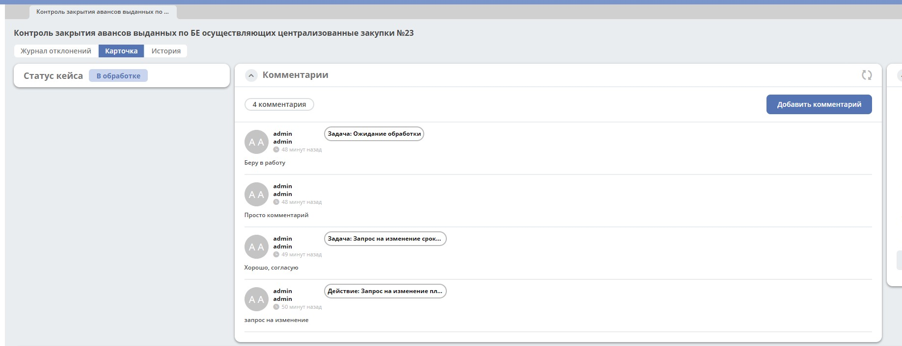

Комментарии¶
Транслирование комментариев в виджет комментариев¶
{kind=link}
Транслирование комментариев задач¶
Флаг отвечающий за включение/отключение функционала в журнале конфигураци - add-comment-with-task-tag-enabled, по умочанию выключен.
При ззавершении задачи комментарий из задачи добавляется в виджет комментариев от имени пользователя, завершившего задачу, с тегом «Задача» и названием задачи.
Транслирование комментариев из действий¶
Флаг отвечающий за включение/отключение функционала в журнале конфигураци - add-comment-with-action-tag-enabled, по умочанию выключен.
Если при выполнении case action на форме был оставлен комментарий, то он добавляется в виджет комментариев от имени пользователя, выполневшего case action, с тегом «Действие» и названием задачи.
На данный момент необходимо явно объявлять мэппинг между типом case action и свойством комментария. Для этого нужно добавить бин по примеру ниже, где
key - alfresco model type с parent iEvent:additionalData, используемый для case action
value - свойство комментария, в которое будет записываться комментарий из формы действия
<bean id="case.actions-comments.type-to-comment-prop.mapping"
class="ru.citeck.ecos.spring.registry.MappingRegistrar">
<constructor-arg ref="case.actions.additional-data.add-comment-with-tag.mappingRegistry"/>
<property name="mapping">
<map>
<entry key="em:changeReactionDueDateRequestEvent" value="em:changeRequestDueDateComment"/>
<entry key="em:changeProcessingDueDateRequestEvent" value="em:changeRequestDueDateComment"/>
<entry key="em:changeValidationDueDateRequestEvent" value="em:changeRequestDueDateComment"/>
</map>
</property>
</bean>